4. Tutorial 4
4.1. Purpose
The purpose of this fourth tutorial is to go into the most advanced functionalities of the Geospatial Microplanning Toolkit (GMT). Previous knowledge is required - you are expected to have worked through Tutorial 1, Tutorial 2 and Tutorial 3 and that you understand all concepts introduced there.
This tutorial will roughly follow the same principle as the previous three, and additionally we will introduce the following:
Health facilities in urban areas
Multiple claimed settlements
Balancing health facility claims
Add a settlement name into an existing settlement
Balancing population
Using the algorithm to populate the microplan taking user edits in account
4.2. Let’s Get Started!
4.2.1. Preparation
Obtain the data for Ward “Abaranje/Okerube” in LGA “Alimosho” in the State “Niger” and download the data. Navigate to the health facility list. If any of those steps pose trouble, consult the steps in Tutorial 1.
4.2.2. Review the Health Facility list
As you can see, this is an urban Ward with many health facilities. In fact, there are 17 health facilities in this Ward. For the purpose of this tutorial, let’s imagine that the following six health facilities are performing routine immunization services:
Ayodamola Health Care and Maternity Home
Best Option Healthcare and Maternity Home
Datam Conv Health Care Center
Matcom Medical Diagnostic Services
Roland Orthopedic Hospital
Royal Jubille Hospital
You should now have the following list.
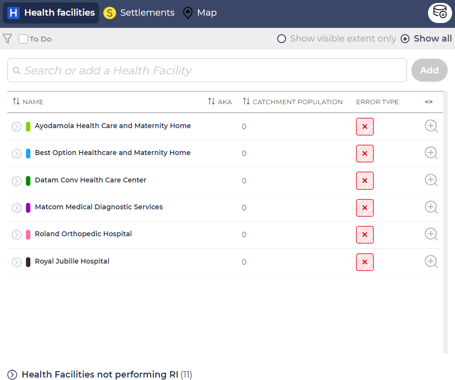
Next, let’s have a look at our settlement list.
4.2.3. Review the Settlement list / Microplanning
This is a case where one Ward only has one single settlement.
Looking at the scale bar, we notice that this is a relatively small Ward. Most likely, we will not need any outreach sessions in this Ward. We can check this by using the guides. Activate the “Guides - Distance”. You can see by zooming in and out that no area of the Ward is further than 2km away from a health facility.
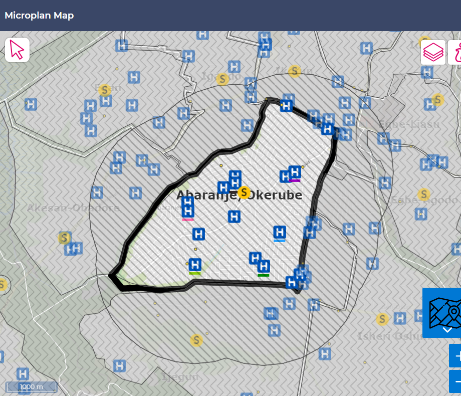
In fact, when you change into the “Single Catchment Mode” you will see that most of the health facilities are less than 2km apart from each other.
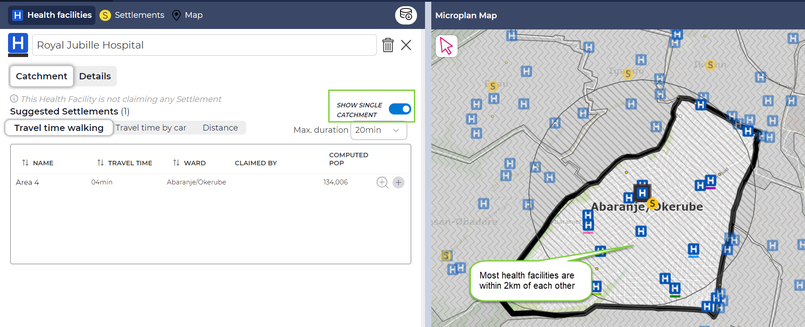
The main problem here is then to decide what the catchment is for each health facility: it is challenging to estimate the service and immunization coverages without potential double-counting or making assumptions of full coverage based on geographic attributes only. It is also challenging to estimate the target population to inform the resources needed by each health facility since immunization services are provided through fixed vaccination posts in health facilities and service recipients are free to decide from which health facilities they will obtain immunization services. Other underlying factors affect immunization coverage in these communities (e.g. socioeconomic condition, ethnicity, religion, etc).
In this case, this leaves us with two options:
Assign this one settlement “Area 4” to all health facilities. This will result in “Area 4” being multiple claimed.
Split “Area 4” in several neighborhoods and assign those to the respective health facilities.
4.2.3.1. Multiple claimed Settlements
Let’s first imagine that there are no individual catchment areas for those health facilities. In this case, we will apply option one above.
Go to the “Roland Orthopedic Hospital” and assign “Area 4” to it’s catchment. The strategy “Fixed-Post” for this settlement seems correct.
Next, we will add “Area 4” also to “Royal Jubille Hospital”.
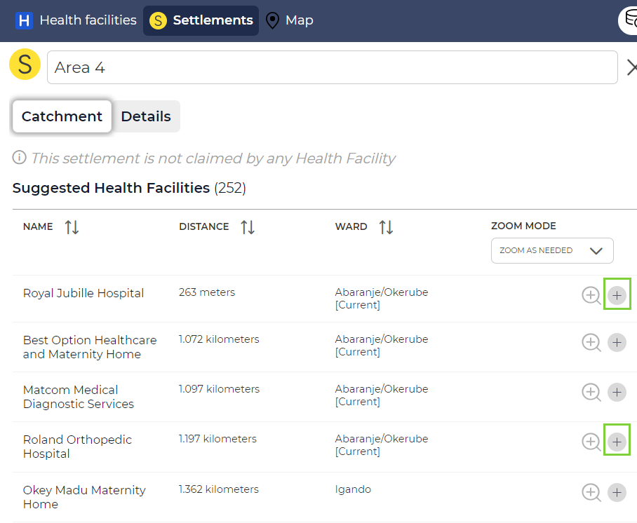
Note: the catchment pattern on the map changed - it shows now red squares. This is called “Multiple Claimed”, as you can see from the legend. Additionally, the health facilities now have in addition to their colored bar underneath also a red bar underneath. A health facility with a red bar indicates that it claims a settlement that is also claimed by another health facility. In the settlement list you will see the “Multiple Claimed” error icon.
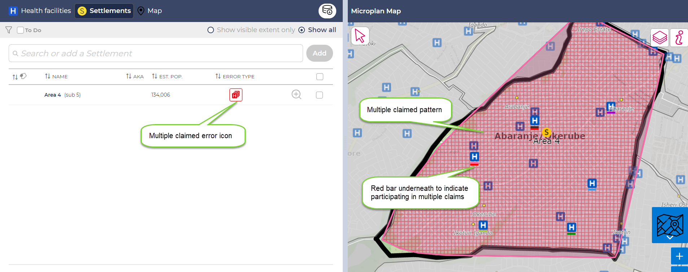
If you go to one of the health facilities that claim “Area4”, you will see a red exclamation sign in the catchment in the “Attributed for the HF” column. This column indicates what proportion of a settlement a health facility claims. In this case, “Royal Jubille Hospital” and the “Roland Orthopedic Hospital” each claim “Area 4” with 100% - you can see that if you click on the exclamation sign. Thus, the total is 200%, which leads to an error. You can also see those percentages if you click on the error icon in the settlement list. Per default, a health facility always claims a settlement fully (i.e. with 100%).
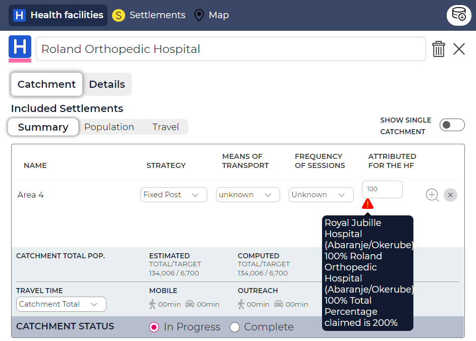
Go back to the health facility list. Here, you will be able to see that both health facilities now have a catchment population corresponding to the population of all of “Area 4” - since they both claim 100%.
Let’s adjust this. We imagine that the orthopedic clinic is in fact only doing minor routine immunization activities. It only does few sessions and thus it claims only 5% of “Area 4”. Go to the catchment detail for the health facility and adjust the number accordingly.
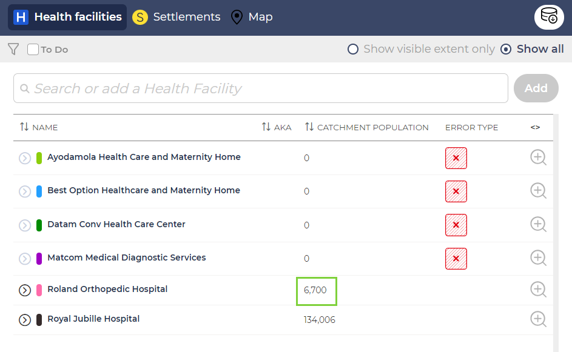
Next, let’s assign “Area 4” to all remaining health facilities. Let’s imagine that the “Royal Jubille Hospital” is the major health facility in this Ward and does most of the activities, it claims 45%. The two maternity homes each do a bit more than the orthopedic hospital, with each 10%. Finally, the “Datam Conv Health Care Center” also has 10% and finally the “Matcom Medical Diagnostic Services” claims another 15%.
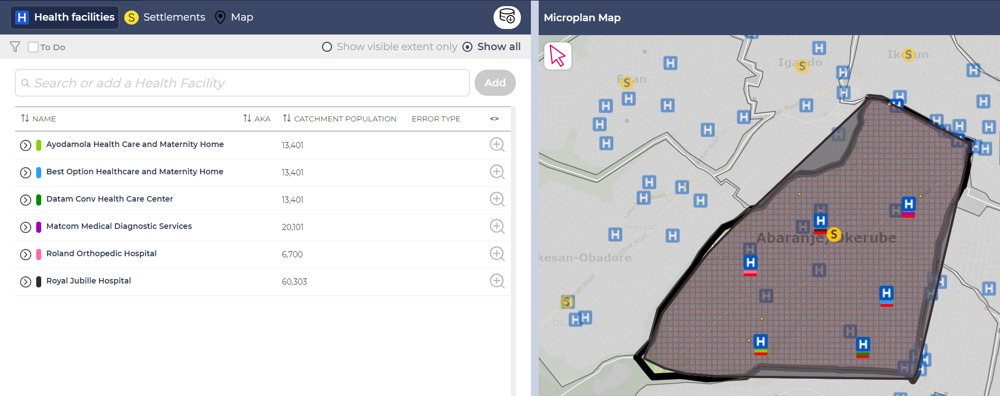
Go back to the settlement list. You notice that “Area 4” now has two error icons. It is multiple claimed, but not all of it is claimed - it seems only 95% are claimed.
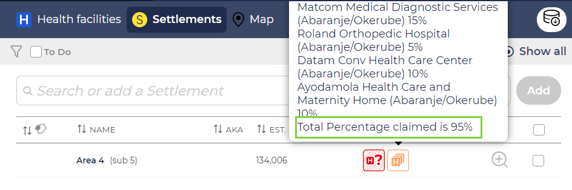
You can adjust the percentages accordingly such that they add up to 100% - when the full settlement has been claimed.
Note
This approach takes into consideration that within a settlement, there is no way to know where people go. However, it also assumes that there is a knowledge of the “weight” of each health facility, such that it can be decided which health facility claims how much of a settlement. Another drawback is that in an urban area such as here, Ward boundaries may be irrelevant for the population and cannot be taken into consideration.
The second option from above is to delineate the actual catchment.
Let’s try that. Remove all health facilities from “Area 4”. The best way to do that is to go to “Area 4” and click on the crosses in the catchment tab.
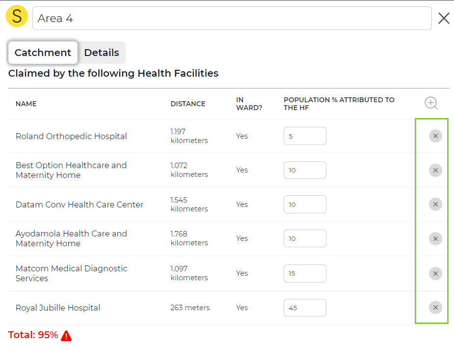
Now, let’s imagine that people will indeed go to the closest health facility. In that case we can use the Voronoi guides to delineate the catchments. Activate them.
Now, split the settlement “Area 4” in the six corresponding parts following the same splitting procedure we saw in Tutorial 3.
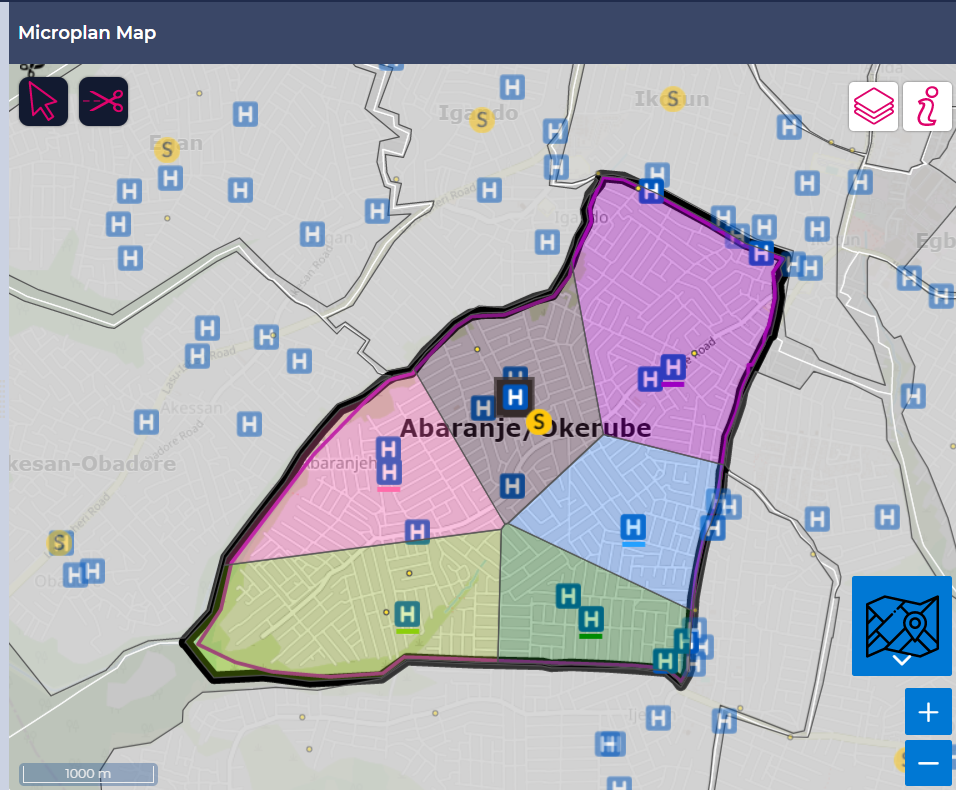
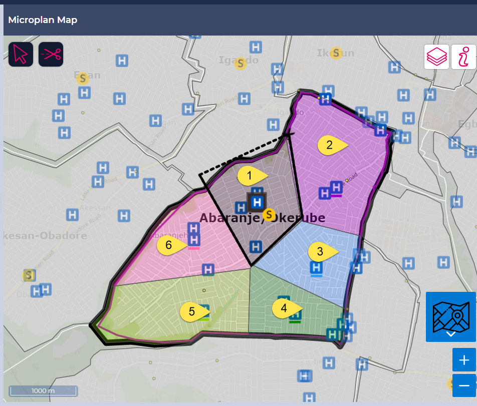
Note several things here:
When there was a subplace name available in the polygon you created, this name was used and became the new name for that part. If there was no subplace name, a machine name was generated - you should rename that part.
Most likely your splitting raised an additional error - some small fragments of the cut settlements may be overlapping. You can resolve it by clicking on the error and selecting the appropriate option.
You have now six “settlements” that you can assign to the respective health facilities.
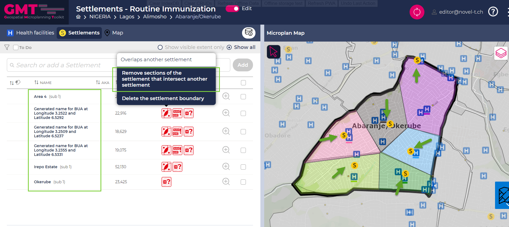
Note
This approach is most likely too theoretical as shown here, since there may be two health facilities very close to each other and it would be too theoretical to use Voronoi polygons to delineate their catchment. Satellite imagery might help here to delineate the neighborhoods precisely.
4.2.4. Planning outreach sessions within the outskirts of urban areas
We are going to take a look at another example. Download the data for Ward “Umaisha”, LGA “Toto” in the state “Nasarawa”.
Let’s imagine that the following three health facilities do not provide routine immunization.
Alhaj Idris Clinic
Umaisha Family Support Programme Clinic
Umaisha General Hospital
Mark them as not performing routine immunization.
Let’s now consider the fixed post strategy for “Umaisha National Model Primary Health Center”. Activate the distance guide on the legend and show only single catchments. Select the health facility and you will notice that in fact, part of our settlement “Umaisha” is further than 2km away from the health facility.
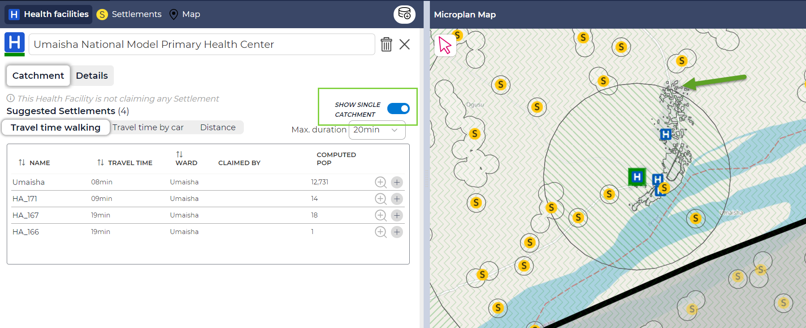
Let’s further imagine that the delineation of this settlement is in fact not complete, as the northern part is known under another name “Umaisha North”.
4.2.4.1. Add Settlement Name within existing settlement
First, let’s add “Umaisha North” to the settlement list. Proceed as before when adding a settlement. Select “Pin” and select the location of “Umaisha North” (a part of northern Umaisha).
You will again be guided through the wizard.
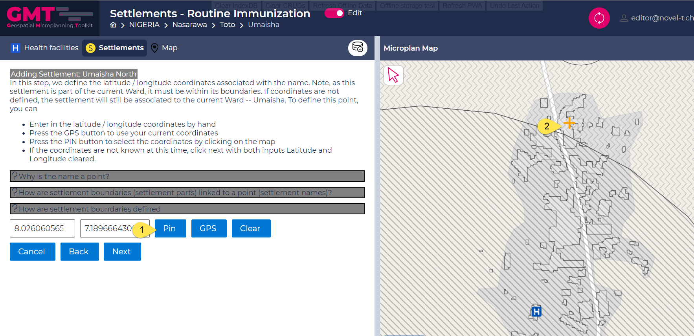
The wizard tells you now that you are putting a name into an already existing settlement boundary with a name. Ideally, we would be able to delineate where “Umaisha North” starts and ends. Let’s assume for now, we don’t know that exactly. Press on “Next”.
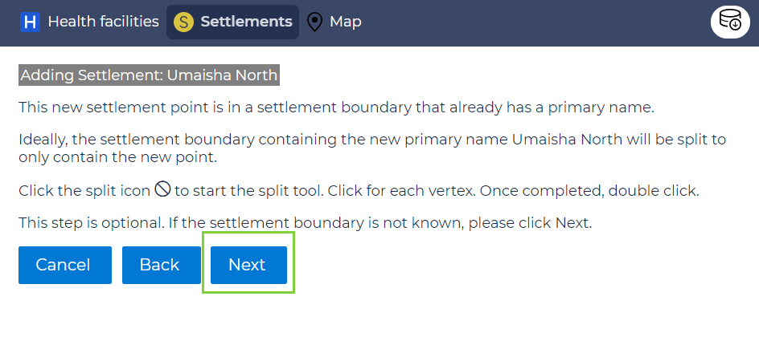
Although we don’t know the exact borders, we actually know the population of “Umaisha North”. There are 3560 people living there. We’ll enter that in the population field. Click on “Next”. In the summary, click “Create new”.
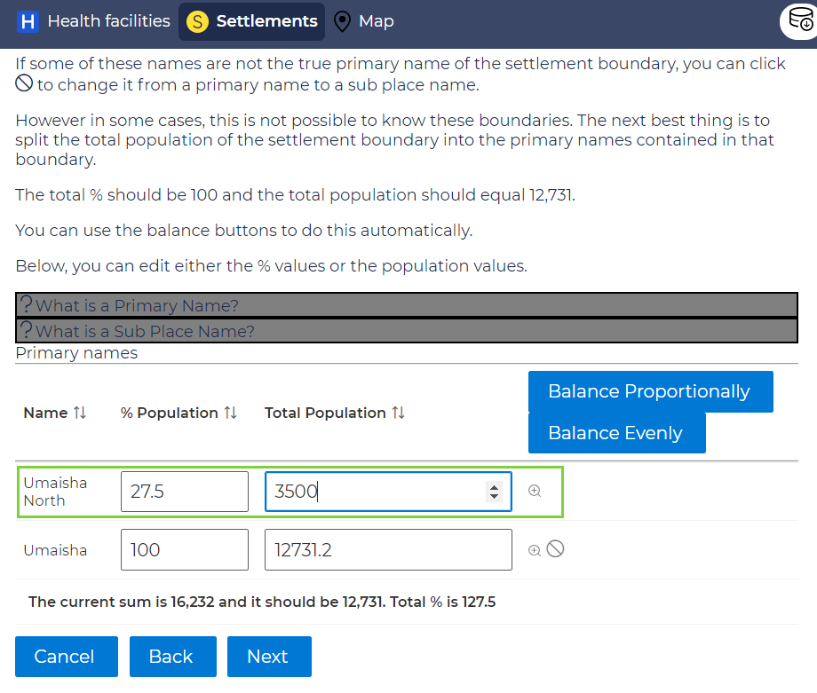
We have now two settlement names within one settlement border. This has several consequences:
You will now see an icon next to the settlement name, indicating that this settlement has several primary names in its border. Note that you can sort this column - for instance, if two names are entirely different (try by renaming “Umaisha North” to “Aisha North”), they will be next to each other, when filtered according to that column instead of filtering according to name.
You will see the percentage of the entire settlement attributed to this primary name - in this case 28% for “Umaisha North” and 72% for “Umaisha”. If ever you need to change this again, you can click on the icons here.
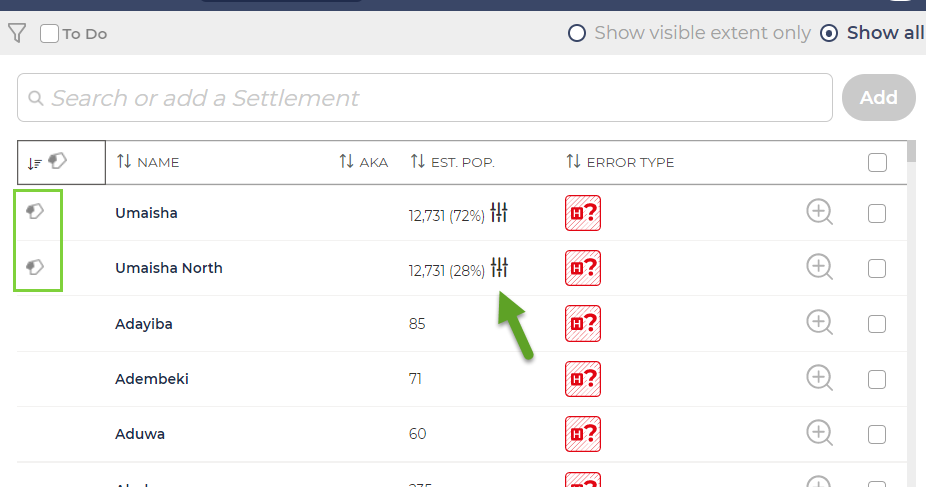
4.2.5. Perform Microplanning
4.2.5.1. Multiple primary names in one settlement with different strategies
We can now add “Umaisha North” and “Umaisha” both to our catchment for the “Umaisha National Model Primary Health Center”. “Umaisha” will be in “Fixed-Post” strategy, while “Umaisha North” is added as “Outreach”, since it is further than 2km away from our health facility. Once both strategies have been assigned, note that the entire settlement now has a pattern for “Multiple claimed”, since we cannot know where what strategy applies. Ideally, the settlement should be split such that it is clear which part needs to receive outreach.
4.2.5.2. Using the computer generated microplan to complete our microplan
Next, we want to complete our microplan. We know that the “Umaisha National Model Primary Health Center” performs outreach activities in “HA_30” (this should of course no longer be a machine generated name). Add it accordingly to the catchment.
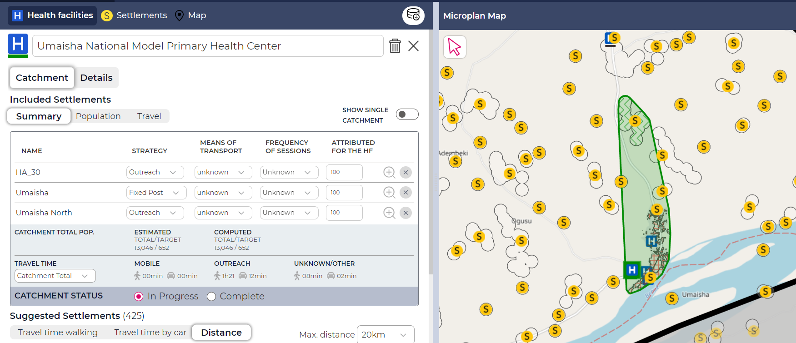
This is all the information that we have though. Now, we would like to use the computer generated microplan to complete our microplan. In order to do so, switch to the map tab.
Let’s try to add everything. Click on “All”. Click on “Add to Microplan”. You will see a warning. Since we created some catchments already, we could choose to replace everything we did so far manually with the computer generated algorithm (“Replace”) or we could choose to just append the computer generated microplan (“Add to Microplan”).
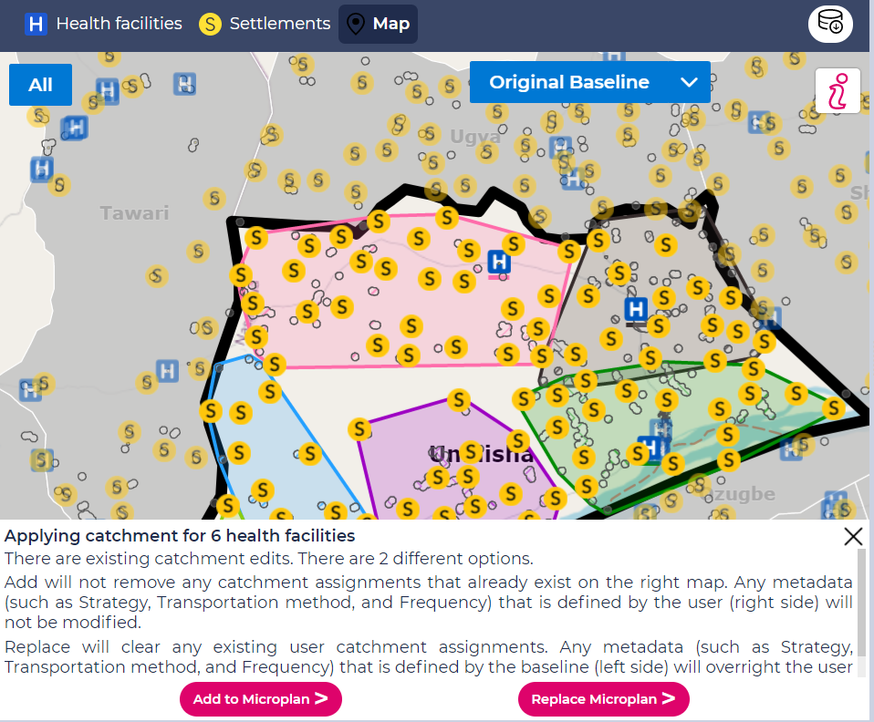
Let’s cancel this for now. We have the option to also recreate the baseline, taking into consideration the edits we have done. To do that, click on “Original Baseline” and choose instead “User Updated Baseline”. Click on “Add to Microplan”.
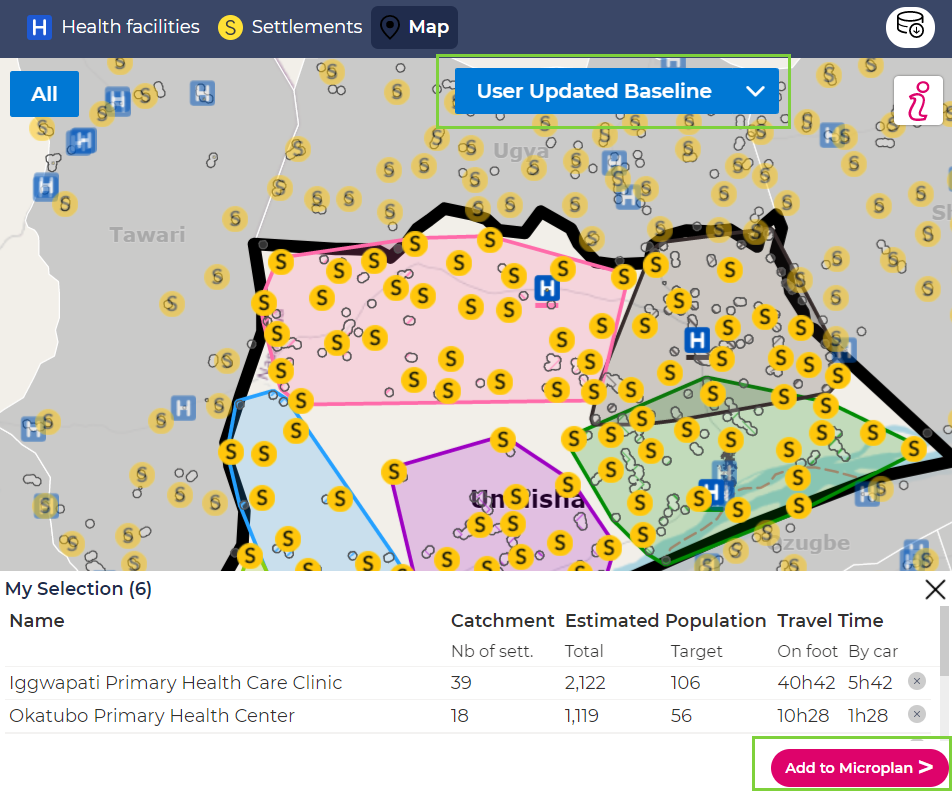
You can now again print the PDF.
Important
You reached the end of Tutorial 4!